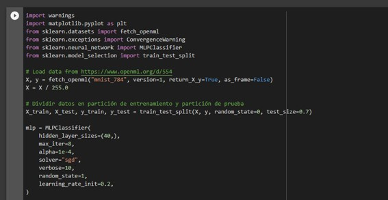

Modelo de sonido
Se mostrarán tres tipos de sonido y se mostrará a que corresponden según el audio
A continuacion vera modelos de clasificacion y un analisis de una red neuronal
Nuestro equipo:
°Sebastián Sabogal
°Samuel Ariza
°Miguel Velazco
°Juan Wilches
°Mateo Vanegas

Se mostrarán tres tipos de sonido y se mostrará a que corresponden según el audio
Se reconocerán tres categorías de imagenes, y se clasficarán las imagenes según corespondan
Visualización de pesos MLP(Perseptrón multicapa) en dataset MNIST
La red neuronal muestra según su comportamiento la manera de su aprendizaje, Puedes hacerte una idea de su comportamiento estudiando los coeficientes obtenidos de la red neuronal. Por ejemplo, si los pesos parecen desestructurados, algunos no se usan o la tasa es muy alta, la regularidad puede ser demasiado baja o la tasa de aprendizaje puede ser demasiado alta.
Este ejemplo muestra cómo trazar algunos pesos de primera clase en un MLPClassifier entrenado en el conjunto de datos MNIST.
Los datos ingresados o los datos de entrada radican en dígitos que son elaborados a mano de 28 X 28 pixeles, donde muestran 784 características del conjunto de datos, por lo cual, la tabla de pesos en la primera capa podemos visualizarla asi (784, hidden_layer_sizes[0]). Entonces se puede observar que la columna de la tabla de peso tiene una imagen de 28 X 28 pixeles.
Este ejemplo puede ser completado de manera más rápida, lo que se debe realizar es entrenar con pocas unidades ocultas y elaborarlo en un tiempo corto, el entrenamiento de estiramiento puede ayudar a la reducción de pesos libres. Este ejemplo muestra una advertencia porque no converge. En este caso es necesario debido a que se tiene un límite en los recursos ante la infraestructura de integración continua que es usada para generar regularmente este documento.
Algoritmo:


Visualización red neuronal en 28x28 pixeles y perdida de pesos

Librerías usadas

Warmings
 Su uso en la red neuronal es, si se manda una advertencia ante el uso limitado de recursos se ignorará según el clasificador de mlp.
Su uso en la red neuronal es, si se manda una advertencia ante el uso limitado de recursos se ignorará según el clasificador de mlp.
Mathplotlib
Su uso en la red neuronal es el poder graficar según los datos contenidos en listas
Las librerías sklearn.datasets
Es una biblioteca de código abierto del aprendizaje automatico donde importamos :
°Fetch_openml:
Obtiene un conjunto de datos desde openml según nombre o id del cojunto, los conjuntos de datos tienen una forma única de id de numero entero o una combinación de nombre y versión.
°Convergencewarning:
Es una advertencia personalizada donde captura los problemas de convergencia del modelo.
°Mlpclassifier:
Ofrece una capa oculta con 100 neuronas para una red neuronal junto a una tasa de aprendizaje.
°Train test Split:
Nos permite dividir en dos bloques un dataset, donde uno es destinado al entrenamiento y validación de un modelo y el otro bloque se destina a las pruebas del modelo.